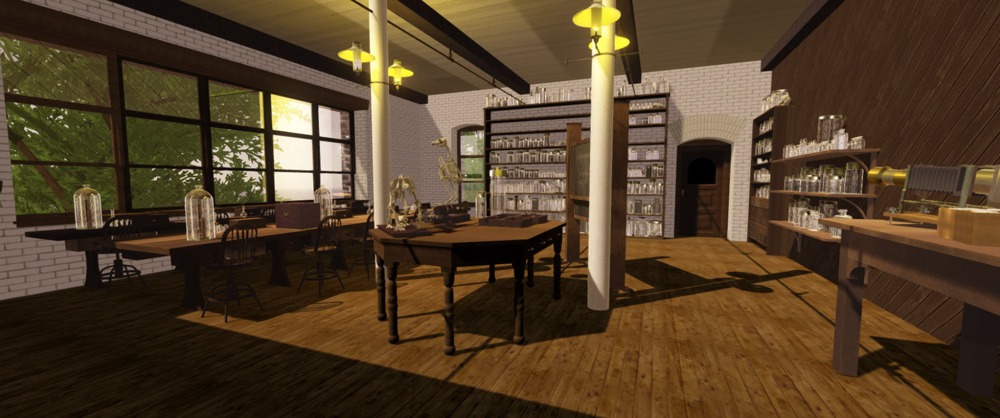

Bryn Mawr Women in Science Project
A Virtual Reality project to contextualize how women studied science
at Bryn Mawr College in the early 1900s.
Internship | Stack: Unity3D, Oculus Rift, C#, WebGL, AFrame | Website: here

Unity Scene of the reconstructed Biology Lab at Dalton Hall
Motivation
This project was inspired by the idea to reconstruct spaces that scientific women used to practice science. Archival information is often hard to find for women in science due to the priority of preserving men’s scientific achievements. Because of the lack of information, we used architectural blueprints and primary sources from the Bryn Mawr College Special Collections to reconstruct the biology and chemistry labs at Bryn Mawr College in Unity3D in order to show how women learned and practiced science in the 1900s. This aided in understanding how their education impacted their scientific achievements later in life.
Project Stack and Explanation
All the objects in this project were designed and built manually using SketchUp. First we built the Biology and Chemistry labs. The rooms had been renovated in the 2000s so we found architectural blueprints from the earliest time in the mid-1900s to find the exact measurements. Then from historical photos shown below, we built objects such as lab tables, lights and beakers. We also built unique objects such as Nettie Stevens’ microscope and a Magic Lantern. All of these objects were then imported into Unity to use in the scenes.
My contribution to the project was to design and program the navigation system to walk around and interact with certain objects, as well as to construct the Unity scenes with the objects created in the exact same formation as historical sources. I also created a caption UI system that populated a menu with information about the specific object taken from a CSV file. The UI system also allowed users to scroll through the caption information.
Primary Source of the Dalton Hall Chemistry Lab that we based our reconstruction off of.

Design and Layout of the Biology and Chemistry Lab Room in SketchUp
Preview of Lab Table, Cabinet and Shelves created in SketchUp and imported into Unity
Lessons Learned
This was my first tech project that required historical research in order to built it. It was a very interesting experience to build every object from scratch and improve the UI and realism of the Unity scene step by step. It showed me that a project takes a long time to perfect into what people see as the final product and to have patience in the process.